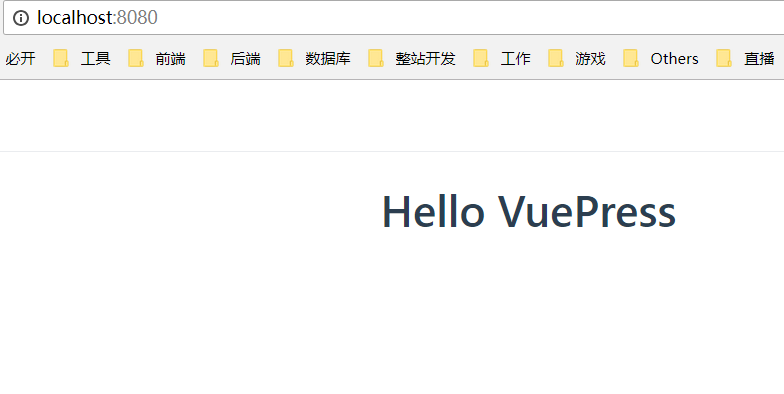

使用 GitHub Pages 和 VuePress 搭建网站
Create by jsliang on 2018-10-20 10:34:39
Recently revised in 2018-10-24 13:54:52
Hello 小伙伴们，如果觉得本文还不错，记得给个 star ， 你们的 star 是我学习的动力！GitHub 地址
本文教你如何利用 GitHub 平台搭建自己的博客/文档库。
如果，你的目的仅仅是想了解如何配置。那么，你应该在看完 第三章 基础配置 后，就可以自己去写自己的博客/文档库，遇到不懂的问题，可以自己翻阅 VuePress 文档，解决你所需要解决的问题。
如果，你的目的是具体查找某组件：例如导航条、例如侧边栏的配置。那么，你可以直接查找目录，跳到对应章节进行阅读。
参考文档：
参考地址：GitHub Pages
参考地址：VuePress 中文网
目前效果：

一 目录
| 目录名 |
|---|
| 一 目录 |
| 二 前言 |
| 三 基础配置 |
| 3.1 搭建 GitHub Pages |
| 3.2 搭建 VuePress |
| 3.2.1 目录讲解 |
| 3.2.2 导航栏 |
| 3.2.3 侧边栏 |
| 3.2.4 默认首页 |
| 四 VuePress 进阶 |
| 4.1 修改样式 |
二 前言
一般的网站，大体由三部分组成：域名、服务器部署环境以及部署代码。
- GitHub Pages，由 GitHub 网站服务，为众多 GitHub 用户提供了良好的服务器部署环境以及域名的好工具。【Github Pages 官网】
- VuePress，是以 Vue 为驱动的主题系统的简约静态网站生成工具 balabala……它是咱尤雨溪大神折腾出来的一个工具，初始目的是为了方便他使用 Markdown 语法来写文档，然后生成 HTML 代码，部署到服务器上即可。在众多网友的修改下，它可以拿来写静态网站，也就是可以拿来发布我们编写的博文。【VuePress 官网】
说到这里，小伙伴们大概懂了我们要讲什么了~
但是，如果这只是一篇关于如何入门 GitHub Pages 和 VuePress 的文档，我会觉得毫无意义。所以，jsliang 希望这篇文章能够整合网上的 GitHub Pages 和 VuePress 资料，并且比它们丰富一丢丢，加入 jsliang 使用心得，让小伙伴们看完无需翻阅大量文章也能快速做好自己的个人文档库/博客。那样，我就心满意足了。因为……
不折腾的前端，跟咸鱼有什么区别！
本文涉及的技术点：
- GitHub
- Git
- Markdown
如果你不是很熟悉上面的技术，jsliang 推荐你去百度下资料，先学习下这些技术，再回来继续学习。其中 GitHub 和 Git 的文章 jsliang 尚未整理，小伙伴只能去百度获取资料了，这里我提供一篇自己写的 Markdown文章：地址。
如果你熟悉且了解上面的技术，那么，让我们愉快地继续往下去折腾吧！
三 基础配置
3.1 搭建 GitHub Pages
- 新建仓库( New repository )，在仓库名( Repository name )中输入
用户名.github.io，例如我的就是：LiangJunrong.github.io，然后点击 Create repository 即可创建一个部署好的环境。
- Clone 项目至电脑，并新增
README.md和index.html：
README.md
Hello Github Pages
===
 这是我的 GitHub Pages 初始目录
index.html
<!DOCTYPE html>
<html lang="en">
<head>
<meta charset="UTF-8">
<meta name="viewport" content="width=device-width,initial-scale=1.0,maximum-scale=1.0,user-scalable=no">
<meta http-equiv="X-UA-Compatible" content="ie=edge">
<title>Hello Github Pages</title>
<style>
.container {
margin-top: 300px;
text-align: center;
}
</style>
</head>
<body>
<h1 class="container">Hello Github Pages</h1>
</body>
</html>
- 上传到 GitHub：
git add .
git commit -m "Github Pages"
git push
- 打开
用户名.github.io：
如上，完成 GitHub Pages 的搭建，现在我们已经拥有了一个免费部署静态页面的平台了。那么，下面我们将讲解如何通过 Markdown + VuePress 来编写博客。
3.2 搭建 VuePress
- 安装 VuePress
在你需要存放的目录中，通过终端命令行安装 VuePress：npm i vuepress -D

- 创建目录及部署代码
编辑 package.json：
package.json
{
"scripts": {
"dev": "vuepress dev docs",
"build": "vuepress build docs"
},
"devDependencies": {
"vuepress": "^0.14.4"
}
}
注：
npm run dev即可开始实时编辑模式npm run build即可对代码进行压缩打包，打包后的文件夹在.vuepress/dist上。
然后创建 docs 文件夹，并在 docs 文件夹下创建 README.md 文件
README.md
Hello VuePress
===
最后在终端执行命令 npm run dev，并打开 http://localhost:8080，得到初步配置界面如下：

值得注意的是。在这里，我们是通过 npm run dev 即时获取我们修改的页面显示。
然后，我们可以通过 npm run build 打包我们的代码，你可以在 .vuepress 中找到一个 dist 文件夹，然后将 dist 中的文件夹上传至 用户名.github.io，即可完成 VuePress 的部署。
3.2.1 目录讲解
在前面，我们讲解了如何设置 VuePress 并启动 现在，我们来个基配的目录，进行讲解：

- docs - VuePress 存放目录
- .vuepress - VuePress 配置目录
- public - 共用文件存储目录
- img - 共用图片目录
- banner.png - 图片-首页 banner
- logo.ico - 图片-网站右上角小图标
- config.js - VuePress 的 js 配置文件
- listOne - 侧边栏项目组1
- pageOne.md - 项目组1页面1
- README.md - 项目组1默认页面
- listTwo - 侧边栏项目组2
- pageThree.md - 项目组2页面3
- pageTwo.md - 项目组2页面2
- README.md - 项目组2默认页面
- README.md - 网站默认首页
+ node_modules - node 依赖包
- package.json - webpack 配置文件
其中，.vuepress 存放 VuePress 的配置目录，public 中存放共有的文件，config.js 为 VuePress 的配置文件，listOne、listTwo 是侧边栏组，对页面进行个分类。
3.2.2 导航栏
在这里，我们开始进行顶部导航栏的配置。
首先，我们填写下 config.js 中的配置代码：
config.js
module.exports = {
// 左上角标题
title: 'jsliang 的文档库',
// 描述
description: '前端工程师 jsliang 的文档库',
// 头部部署，右上角小图标
head: [
// ico 配置
['link', {
rel: 'icon',
href: '/img/logo.ico'
}]
],
// 主题部署
themeConfig: {
/**
* 右侧导航条
* text - 显示字段
* link - 链接：注意前后带 / 符号
*/
nav: [
{
text: '主页',
link: '/'
},
/**
* 多级菜单
* 开头 text 为一级标题
* 数组内 text 为二级标题
* link 为链接，注意带 /
*/
{
text: '博文',
items: [
{
text: '微信小程序 bug 集中营',
link: 'https://github.com/LiangJunrong/document-library/blob/master/other-library/WeChatApplet/WeChatAppletBug.md'
},
{
text: '使用 GitHub Pages 和 VuePress 搭建网站',
link: 'https://github.com/LiangJunrong/document-library/blob/master/other-library/GithubPages/GithubPages.md'
}
]
},
{
text: '关于',
link: '/about/'
},
// 链接到网站
{
text: 'Github',
link: 'https://www.github.com/LiangJunrong'
},
]
}
}
然后，启动 npm run dev，打开 http://localhost:8080，你可以看到导航栏部署完毕了。
3.2.3 侧边栏
VuePress 中的侧边栏配置，一共有三种方式：简单配置，按组配置，分页配置，有兴趣的小伙伴可以去：地址 直接查看，这里我们单纯讲下我们部署我们的文档库用到的分页配置。
目录如下：
然后，我们修改下 config.js：
config.js
module.exports = {
title: 'jsliang 的文档库',
description: '前端工程师 jsliang 的文档库',
head: [
// ...省略，配置代码同 3.2.2
],
themeConfig: {
nav: [
// ...省略，配置代码同 3.2.2
],
/**
* 侧边栏配置：侧边栏组
*/
sidebar: {
// 侧边栏在 /index/ 目录上
'/index/': [
['', 'README'],
['indexTwo', '导航第二页']
],
// 侧边栏在 /about/ 目录上
'/about/': [
['', 'README'],
['GithubPages', 'GithubPages'],
['VuePress', 'VuePress']
]
}
}
}
最后，我们运行 npm run dev，查看 http://localhost:8080 所示如下：
可以看出，我们已经成功配置了分页形式的侧边栏。
3.2.4 默认首页
VuePress 为我们设置了一套默认的首页，我们直接拿来用，看看它长什么样子吧！
首先，我们找一张 banner.png 图，放到 public/img/banner.png 上。
然后，我们修改下 docs/README.md 文件：
docs/README.md
---
home: true
heroImage: ./img/banner.png
actionText: 皮皮虾 我们走 →
actionLink: /index/
features:
- title: 装逼
details: 在这里，你可以看到 jsliang 在这里无限装逼，所以你可以尽情打脸。就算你懂，没关系，打了脸再说~
- title: 搞笑
details: 在这里，你可以获得各种学习欢乐，轻松进击前端编程。点滴进步，成就不一样的你。
- title: 深沉
details: 在这里，你可以收获一个广州自身漂泊的人的情怀，感受在这个烦躁的社会 jsliang 如何安身立命。
footer: jsliang 的文档库 | Copyright © 2018 不折腾的前端，和咸鱼有什么区别
---
OK，由于我们重新修改了首页（即 docs/README.md），所以我们重新重启下，Ctrl+C -> y -> npm run dev，重新打开 http://localhost:8080：
完美！这样，我们就完成了基础的配置了！！！
四 VuePress 进阶
4.1 修改样式
正在逐步完善。
如果你觉得该篇文章对你非常有用，请给我在 GitHub 上的文档库一个 star，你的 star 是我不断折腾的动力~ 【Github 地址】
jsliang 的文档库 由 梁峻荣 采用 知识共享 署名-非商业性使用-相同方式共享 4.0 国际 许可协议进行许可。
基于https://github.com/LiangJunrong/document-library上的作品创作。
本许可协议授权之外的使用权限可以从 https://creativecommons.org/licenses/by-nc-sa/2.5/cn/ 处获得。